Centralny, większy znak ARCADE — poprawiony POC
Rekomendacja: B — nasycony filc z większą pieczęcią ARCADE. Znak jest w geometrycznym środku filcu (50% 50%), w obu orientacjach. Karty i żetony naturalnie go zasłaniają, zgodnie z Twoją decyzją. Nowy medalion z pikem, ornament i typografia są oryginalne. Neon zachowuje fiolet, Classic zieleń; drobne włókna nie nakładają szarej warstwy RGB.
Każdy rząd: poprawiona wersja B podczas rozdania, B bez kart wspólnych, A bez znaku, odrzucony szary POC, oryginalny main. Obrazy mają natywne wymiary ekranu; przewiń poziomo lub kliknij obraz. Widok bez kart wspólnych zachowuje żetony i HUD, więc część znaku nadal może być zasłonięta. Cały znak SVG.

Rzeczywisty HTML/CSS/renderer i grafiki z Netlify Preview. Dane graczy, kart, WS i CH są izolowanymi fixture w przeglądarce; zrzuty nie pochodzą z żywej sesji. Bez zmian WS/backendu/CH/Stage/Production. Emulacja ekranów w Chromium, nie test telefonu.
SHA runtime: 609c48fa599e18b408f27359721f97252fd0dc39. Niezmienny Deploy Preview tego SHA · Draft PR #1088 · Raport · Pomiary.
Baseline i odrzucona wersja zachowane z poprzedniej walidacji; ich renderer/geometria są niezmienione. B i A pobrano z dokładnego powyższego SHA; A usuwa znak przez tymczasowy CSS wyłącznie w narzędziu do porównania.
Neon Vegas — landscape, 844×390


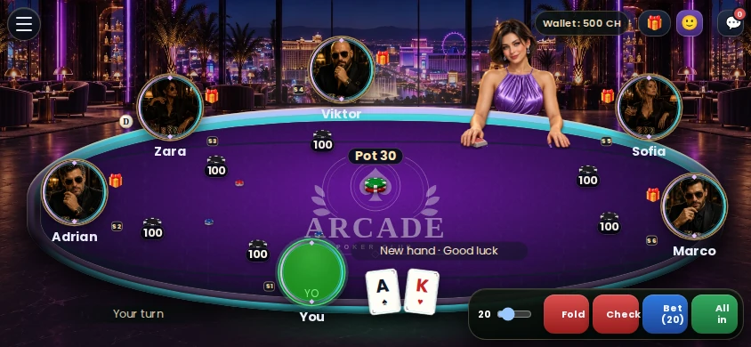

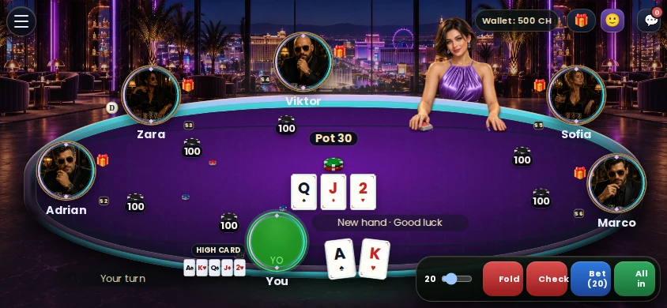

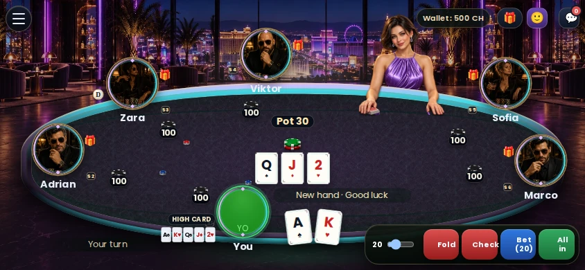

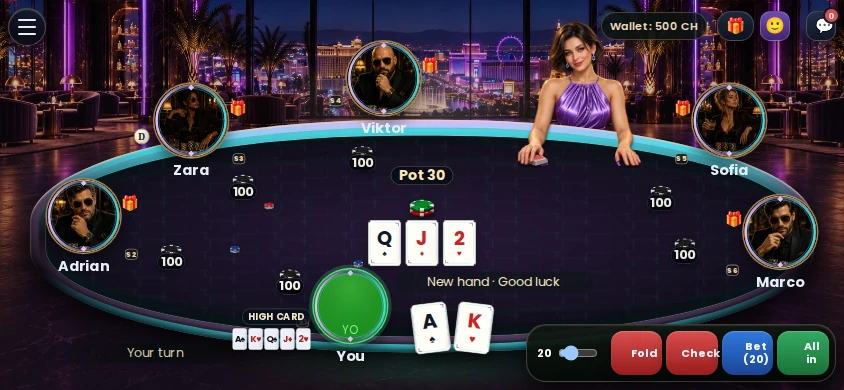
Neon Vegas — portrait, 390×844

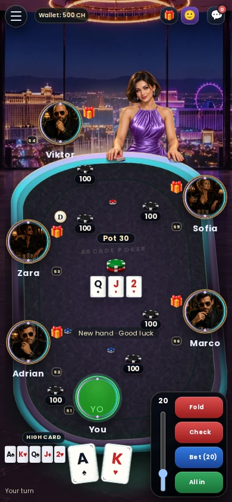

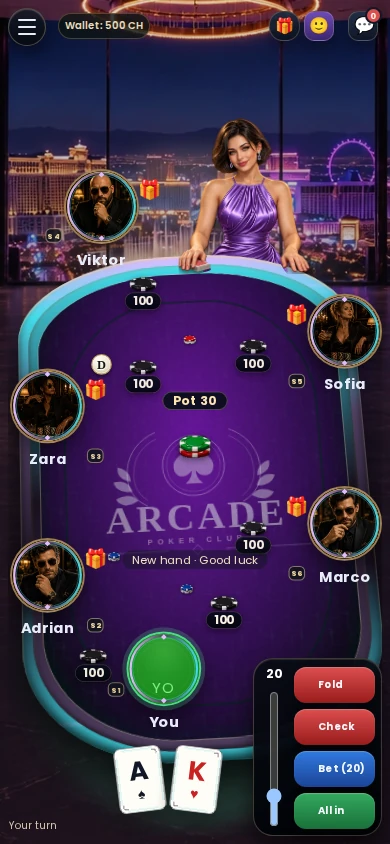

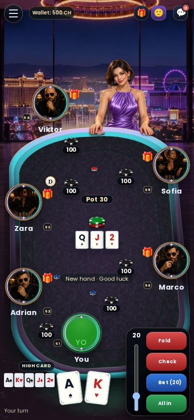


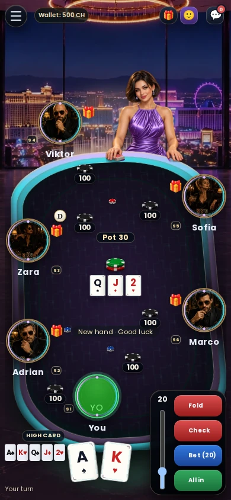
Neon Vegas — short-landscape, 568×320

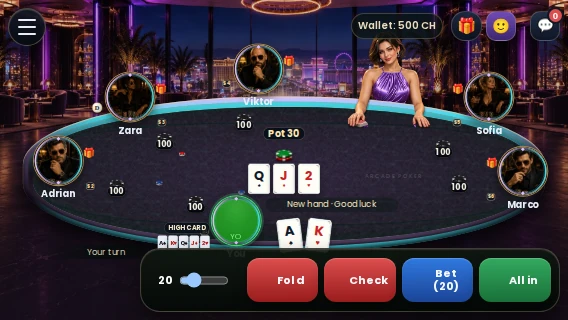

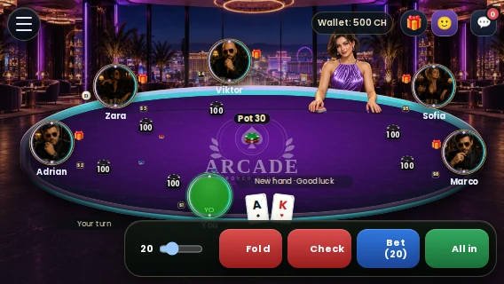

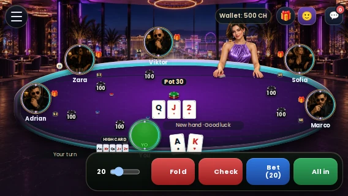

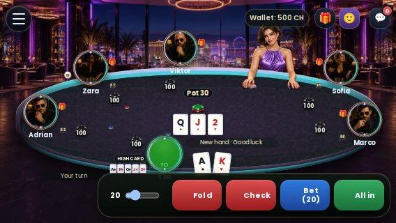

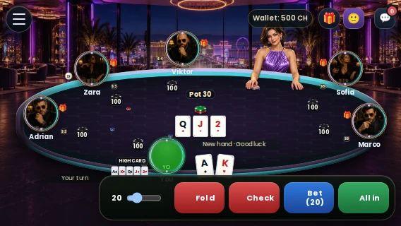
Classic Casino — landscape, 844×390

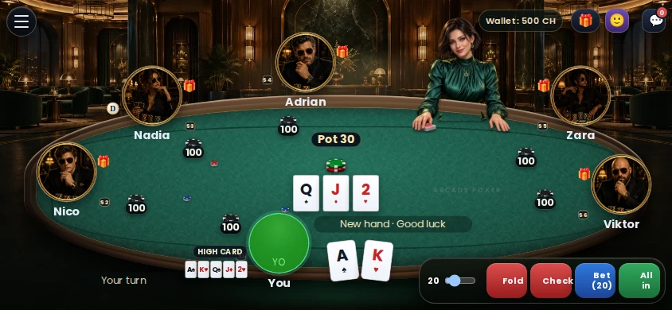

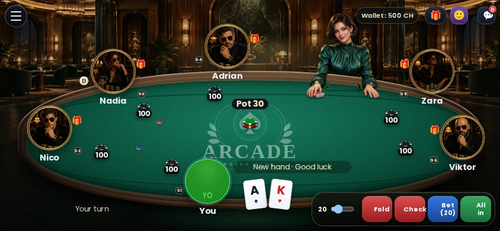

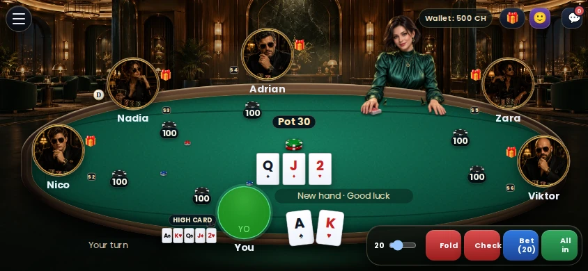


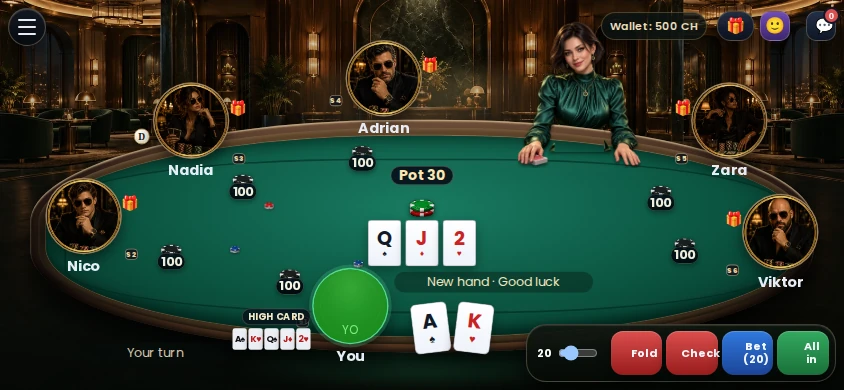
Classic Casino — portrait, 390×844

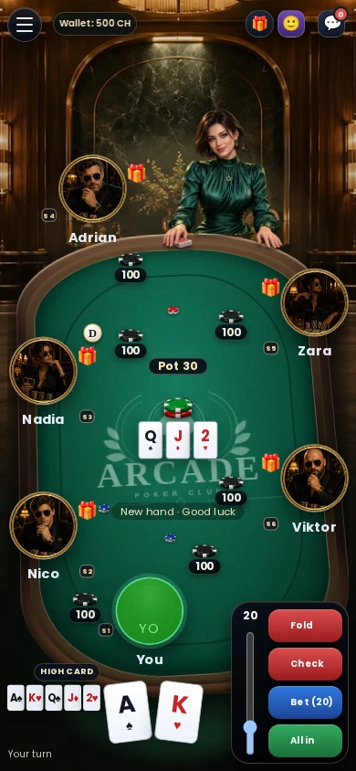

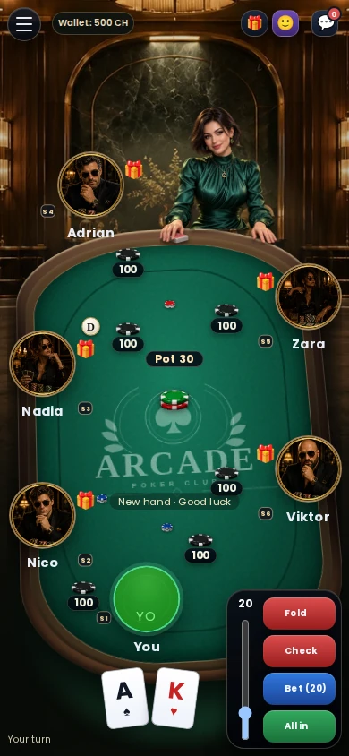

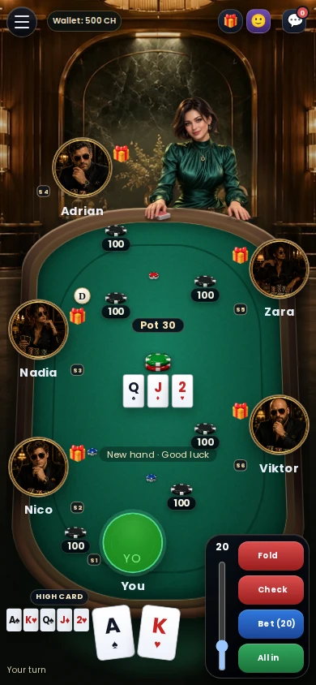


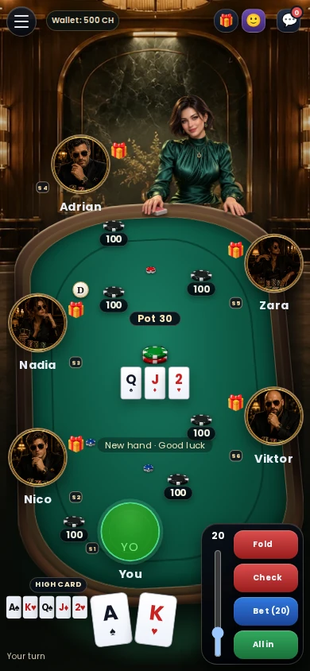
Classic Casino — short-landscape, 568×320

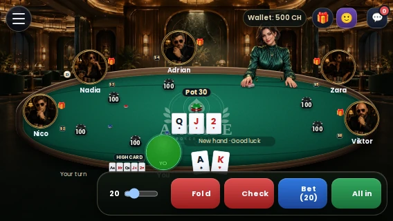

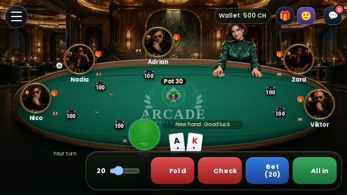


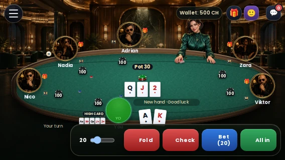

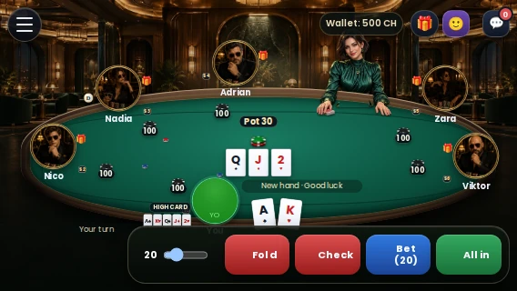
Materiał WebP: 68 632 B; oryginalny znak SVG: 1 480 B. Razem 70 112 B (68,47 KiB), dwa współdzielone statyczne zasoby. Brak nowego JS, animacji i filtrów. Geometria oraz menu/suwak bez wykrytych regresji. Pomiar desktopowy nie jest oceną wydajności telefonu.
T004 — STOP. Czekam na Twoją ocenę materiału i większego centralnego znaku. T005–T007 oraz pozostałe cztery motywy bez GO. Zielone CI nie jest akceptacją wyglądu.